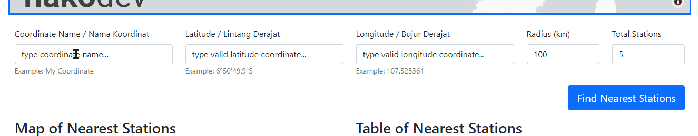

Pengembangan tiga aplikasi web pengolahan data hujan menggunakan python
Dalam analisis hidrologi, pengolahan data hujan merupakan proses yang penting. Dengan membesarnya penyimpanan data dan permintaan pengolahan data yang lebih cepat, diperlukan solusi teknologi yang dapat menjawab tantangan tersebut. Dikembangkan tiga aplikasi pengolahan data hujan berbasis web yang mampu mempersingkat proses pengerjaan pengolahan data hujan dan mengurangi kekeliruan yang terjadi. Aplikasi yang telah dikembangkan yaitu Rainfall Stations Explorer, Rainfall Data Explorer, dan Frequency Analysis.
Untuk mensitasi artikel ini dalam makalah formal, disarankan mensitasi makalah “Pengembangan Aplikasi Pengolahan Data Hujan Berbasis Web” dari prosiding PIT HATHI ke-39. Jika bukan untuk makalah formal, dapat menggunakan sitasi yang tersedia di akhir halaman (mensitasi halaman ini).
Ketiga aplikasi ini telah dipresentasikan di kegiatan Pertemuan Ilmiah Tahunan (PIT) Himpunan Ahli Teknik Hidrolik Indonesia (HATHI) ke-39 yang diadakan pada tanggal 29 Oktober 2022 dalam bentuk makalah berjudul “Pengembangan Aplikasi Pengolahan Data Hujan Berbasis Web”.
Artikel ini ditujukan sebagai penjelasan teknis dengan penyampaian informal dan bukan sebagai pengganti makalah yang dipublikasikan di PIT HATHI ke-39. Harapannya, artikel ini memudahkan kontributor dan developer untuk berkontribusi maupun mengembangkan aplikasi yang serupa.
Artikel ini juga dapat dikembangkan seiringnya waktu, sesuai perkembangan aplikasi ataupun teknologi yang digunakan.
Aplikasi Pengolahan Data Hujan merupakan tiga aplikasi web yang dapat membantu saat pengolahan data hujan berupa penyimpanan data hingga analisis frekuensi. Aplikasi ini menerapkan ilmu hidrologi yang digunakan di Indonesia1.
Rainfall Stations Explorer atau fiako-stations adalah aplikasi web yang dapat digunakan untuk mengeksplorasi data hujan harian yang tersedia di database. Dari aplikasi ini dapat memperoleh informasi kelengkapan data dan akusisi data hujan harian dengan mudah dan cepat. “Demo” disini diartikan menggunakan dataset publik atau acak dan hanya berfungsi untuk mendemonstrasikan fungsi aplikasi. Demonstrasi aplikasi bisa dilihat pada Gambar 1 dengan tabel informasi di Tabel 1.

fiako-stations)| Judul Aplikasi | Rainfall Stations Explorer |
| Kode Aplikasi | fiako-stations |
| Versi Aplikasi | v3.1.0 (15 November 2022) |
| Alamat Aplikasi | demo-fiako-stations.herokuapp.com |
| Source Code | fiakoenjiniring/demo-stations |
Rainfall Data Explorer atau hidrokit-rainfall adalah aplikasi web yang dapat digunakan untuk menganalisis data hujan harian. Dari aplikasi ini dapat memperoleh informasi hujan maksimum, total hujan, hari hujan, hari kering, dan kejadian hujan maksimum setiap periode yang ditentukannya dengan presentasi menggunakan visualisasi data. Grafik kumulatif tahunan dan konsistensi (kurva massa ganda) juga ditambahkan sejak versi v1.1.x. Demonstrasi aplikasi bisa dilihat di Gambar 2 dengan tabel informasi di Tabel 2.

hidrokit-rainfall)| Judul Aplikasi | Rainfall Data Explorer |
| Kode Aplikasi | hidrokit-rainfall |
| Versi Aplikasi | v1.3.0 (15 November 2022) |
| Alamat Aplikasi | hidrokit-rainfall.herokuapp.com |
| Source Code | fiakoenjiniring/rainfall |
Frequency Analysis (sebelumnya dikenal Frequency Analysis in Hydrology) atau fiako-anfrek adalah aplikasi web yang dapat digunakan untuk menghitung parameter statistik, jenis sebarannya (distribusi), analisis frekuensi, dan uji kecocokan distribusi. Output aplikasi ini berupa visualisasi hasil perhitungan dan tabel/teks berupa .csv/.txt. Demonstrasi aplikasi bisa dilihat di Gambar 3 dengan tabel informasi di Tabel 3.
fiako-anfrek)| Judul Aplikasi | Frequency Analysis |
| Kode Aplikasi | fiako-anfrek |
| Versi Aplikasi | v1.1.0 (15 November 2022) |
| Alamat Aplikasi | fiako-anfrek.herokuapp.com |
| Source Code | fiakoenjiniring/anfrek |
Pengembangan aplikasi ini tidak mengikuti template yang sudah tersedia sehingga penulisan kode ataupun strukturnya yang dihasilkan masih perlu dievaluasi kembali. Dalam bab ini, akan dibahas informasi mengenai development aplikasi sehingga memudahkan developer membaca source code atau mengembangkannya.
Pengembangan aplikasi ini dibangun menggunakan bahasa pemrograman python. Daftar package/library yang digunakan dalam pengembangan aplikasi disajikan dalam bentuk tabel di Tabel 4.
| Package/Library | fiako-stations |
hidrokit-rainfall |
fiako-anfrek |
|---|---|---|---|
python==3.9.13 |
✔️ | ✔️ | ✔️ |
pandas==1.5.1 |
✔️ | ✔️ | ✔️ |
dash==2.7.0 |
✔️ | ✔️ | ✔️ |
dash-bootstrap-components==1.2.1 |
✔️ | ✔️ | ✔️ |
dash-bootstrap-templates==1.0.7 |
✔️ | ✔️ | ✔️ |
python-box==6.1.0 |
✔️ | ✔️ | ✔️ |
pyyaml==6.0 |
✔️ | ✔️ | ✔️ |
dash-auth==1.4.12 |
✔️ | ❌ | ❌ |
geopy==2.3.0 |
✔️ | ❌ | ❌ |
pytables==3.7.0 |
✔️ | ❌ | ❌ |
hidrokit==0.4.1 |
❌ | ✔️ | ✔️ |
statmodels==0.13.5 |
❌ | ✔️ | ❌ |
scipy==1.83 |
❌ | ❌ | ✔️ |
| environment.yml (conda) | env | env | env |
| requirements.txt (venv) | env | env | env |
Pengembangan aplikasi ini menggunakan sistem operasi Windows 11 dan miniconda. Informasi environment untuk setiap aplikasi sudah tersedia di repository dengan nama file environment.yml (conda) atau requirements.txt (venv). Beberapa package/library tambahan dalam development antara lain black, flake8 untuk code-formatting atau linting. Untuk pengembangan visualisasinya menggunakan fitur notebook yang tersedia di VSCode. Alternatifnya menggunakan Google Colab, hanya perlu diperhatikan untuk versi setiap library yang digunakan4.
Aplikasi ini terdiri beberapa file atau komponen yang saling berhubungan. Pada dasarnya aplikasi berpusat pada file app.py sebagai file utama menjalankannya aplikasi. Daftar file yang digunakan dalam aplikasi dapat dilihat di Tabel 5.
| Filename | Kegunaan | Catatan |
|---|---|---|
app_config.yml |
Konfigurasi aplikasi dalam bentuk .yml |
- |
pyconfig.py |
Mengubah app_config.yml menjadi objek appConfig |
Hanya digunakan untuk membaca app_config.yml |
pytemplate.py |
Konfigurasi template untuk interactive plot plotly |
- |
pyfigure.py |
Membangkitkan objek figure grafik interaktif |
. |
pylayoutfunc.py |
Kumpulan fungsi terkait tampilan/layout aplikasi | . |
pylayout.py |
File utama untuk menyimpan layout aplikasi | . |
pyfunc.py |
Kumpulan fungsi umum yang digunakan dalam aplikasi | . |
app.py |
File utama aplikasi | Seluruh callback diatur dalam file ini |
Hubungan antara file bisa dilihat pada Gambar 4. Struktur aplikasi tersebut tidak begitu ketat sehingga beberapa file/modul yang seharusnya tidak digunakan di app.py tetap dipanggil. Struktur ini hanya memudahkan developer untuk menyusun fitur ataupun menelusuri fungsi. Dengan struktur tersebut, harapannya memudahkan untuk developer atau kontributor untuk berkontribusi ataupun mengembangkan.
Struktur diatas masih bisa diperbaiki atau dikembangkan lagi seperti memisahkan callback ke file tersendiri.
Aplikasi ini tidak memiliki pengujian seperti unit test. Hal ini dikarenakan untuk pengujian tersebut memakan waktu pengembangan aplikasi. Pada Dash versi v2.6, fitur unit tests sudah ditambahkan, sehingga memungkinkan pada pengembangan lanjutannya menyertakan unit test. Akan tetapi, aplikasi ini tetap melalui tahap pengujian, hanya saja dilakukan secara manual dan mandiri.
Aplikasi pengolahan data hujan hanya fokus pada visualisasi. Jadi, beberapa fitur analisis itu tergantung package/library yang digunakan pada aplikasinya. Untuk fiako-stations tidak ada proses analisis sehingga pengujian hanya sebatas visualisasi dan interaktif antar komponennya. Pada hidrokit-rainfall dan fiako-anfrek bergantung dengan paket hidrokit, sehingga untuk hasil analisis akan bergantung pengujian pada paket tersebut.
Pengujian dimulai dengan memeriksa interaksi komponen dengan melihat visualisasi dan outputnya sesuai ekspetasi. Jika tidak sesuai ekspetasi, kembali lagi ke tahap pengembangan, tapi jika sesuai ekspetasi bisa dilanjutkan ke tahap publikasi. Proses pengujian manual ini dapat diilustrasikan seperti Gambar 5.

Setelah hasil aplikasi memuaskan dan dapat digunakan, aplikasi dirilis dalam bentuk proyek open-source di GitHub. Ketiga aplikasi menggunakan lisensi MIT. Karena proyek akan diserahkan ke komunitas, maka menyusun struktur dan mengikuti tata cara penulisan kode perlu diperhatikan.
Sebelum dipublikasikan ke publik, ada tahap refactoring dengan harapannya memudahkan developer lain membaca kode aplikasi. Setelah dipublikasikan di github, aplikasi bisa didemonstrasikan melalui deployment ke server, dan pengelolaan. Akan tetapi, tahap tersebut merupakan opsional dan tergantung kebutuhan saja. Pada akhirnya, setelah dipublikasikan di github, dikembalikan ke tanggung jawab komunitas untuk mengembangkannya ketika repository tidak ada pengelolanya. Alur publikasi seperti pada gambaran Gambar 6.

Sesuai ilustrasi diatas, aplikasi yang telah dipublikasikan diserahkan ke komunitas untuk mengembangkannya lebih lanjut. Dengan lisensi MIT, aplikasi juga bisa dimodifikasi dan dirilis dengan lisensi yang berbeda6. Pada tahap terakhir mengacu pada pengembangan dengan menggunakan Open Source Software Development.
Tiga aplikasi yang telah dipublikasikan memiliki fitur-fitur yang dapat membantu pekerjaan analisis hidrologi dari penyimpanan/pengambilan data hujan hingga analisis frekuensi.
Fitur aplikasi Rainfall Stations Explorer (fiako-stations) antara lain:
Memudahkan eksplorasi stasiun hujan yang dimiliki. Demonstrasi fitur bisa dilihat pada Gambar 7 seperti navigasi dan interaksi di Gambar 7 (a).

Mengetahui informasi stasiun terdekat terhadap titik lokasi tinjauan. Demonstrasi fitur bisa dilihat pada Gambar 8 seperti pengisian koordinat titik tinjau di Gambar 8 (a) dan interaksi peta dan tabel di Gambar 8 (b).


Melihat secara sekilas kelengkapan data dengan heatmap. Demonstrasi fitur bisa dilihat pada Gambar 9 seperti grafik heatmap di Gambar 9 (a) dan grafik bar plot di Gambar 9 (b).
Memilih stasiun dan periode yang akan digunakan untuk analisis. Demonstrasi fitur bisa dilihat pada Gambar 10 seperti navigasi saat memilih stasiun di Gambar 10 (a).
Visualisasi & download data hujan harian dengan periode yang telah dipilih. Demonstrasi fitur bisa dilihat pada Gambar 11 seperti interaksi visualisasi di Gambar 11 (a), download data hujan harian di Gambar 11 (b), isi file CSV di Gambar 11 (c).

Fitur aplikasi Rainfall Data Explorer (hidrokit-rainfall) antara lain:
Eksplorasi data hujan dalam bentuk table. Termasuk melakukan modifikasi dan filter. Demonstrasi bisa dilihat pada Gambar 12 seperti interaksi tabel di Gambar 12 (a).
Visualisasi data hujan untuk setiap stasiun dalam bentuk line atau bar (jika datasetnya kecil). Demonstrasi bisa dilihat pada Gambar 13 seperti visualisasi dalam bentuk garis / line di Gambar 13 (a) dan dalam bentuk bar di Gambar 13 (b).
Analisis data hujan yang mengeluarkan rekapitulasi/ringkasan untuk tiga periode yaitu biweekly, monthly, dan yearly.

Mempresentasikan hasil analisis dalam bentuk visualisasi analisis data hujan berupa bar plot dan bubble chart. Demonstrasi fitur ini bisa dilihat pada Gambar 15. Visualisasi rekap bisa dilihat di Gambar 15 (a) atau lebih detailnya untuk maksimum dan jumlah hujan di Gambar 15 (b), jumlah hari kering dan basah di Gambar 15 (c), dan visualisasi kejadian hujan maksimum di Gambar 15 (d). Terdapat visualisasi baru sejak versi 1.1 yaitu kumulatif tahunan di Gambar 15 (e) dan konsistensi di Gambar 15 (f).

Fitur aplikasi Frequency Analysis (fiako-anfrek) antara lain:
Eksplorasi data deret waktu (time series) dengan visualisasi bar dan bubble. Demonstrasi fitur dapat dilihat pada Gambar 16 seperti interaksi tabel dan grafik di Gambar 16 (a).
Menghitung parameter statistik dan outlier beserta visualisasinya. Demonstrasi fitur dapat dilihat pada Gambar 17 seperti visualisasi statistik & outlier di Gambar 17 (a), visualisasi distribusi di Gambar 17 (b), dan download hasil perhitungan di Gambar 17 (c).
Menghitung analisis frekuensi setiap distribusi dengan periode ulang beserta visualisasinya. Demonstrasi fitur dapat dilihat pada Gambar 18 seperti interaksi input di Gambar 18 (a), interaksi grafik di Gambar 18 (b), dan download hasil analisis di Gambar 18 (c).
Melakukan uji kecocokan distribusi Chi-Square dan Kolmogorov-Smirnov beserta visualisasinya. Demonstrasi fitur ini dapat dilihat pada Gambar 19 seperti interaksinya di Gambar 19 (a), visualisasi uji kecocokdan distribusi di Gambar 19 (b), visualisasi hasil pengujian di Gambar 19 (c), dan bentuk download hasilnya di Gambar 19 (d).

Dalam penggunaan aplikasi pengolahan data hujan terdapat langkah yang harus dilakukan untuk aplikasi fiako-stations di Bab 4.1. Dan ketiga aplikasi ini pada akhirnya juga merupakan satu kesatuan yang dapat membantu pekerjaan analisis hidrologi seperti dijelaskan pada Bab 4.2.
fiako-stationsBerbeda dengan aplikasi lain yang cukup langsung digunakan dengan memberikan data ke aplikasi. Pada aplikasi fiako-stations, terdapat langkah-langkah yang harus dilakukan atau diperhatikan agar aplikasi bekerja sesuai dengan harapan pengguna. Berikut langkah-langkah yang harus dilakukan sebelum menggunakan aplikasi fiako-stations:
run_completeness.py kemudian run_metadata.py. Untuk membangkitkan kelengkapan data dan metadata setiap stasiun yang ada di aplikasi.Proses tersebut bisa dilihat pada Gambar 20.

fiako-stations.Ketiga aplikasi diatas dapat membantu proses analisis hidrologi dari menyimpan data hingga analisis frekuensi. Berikut proses analisis hidrologi menggunakan ketiga aplikasi:
fiako-stations.fiako-stations diperoleh hujan harian seluruh stasiun dengan format CSV.fiako-stations dapat langsung digunakan sebagai input di aplikasi hidrokit-rainfall.hidrokit-rainfall harus diolah kembali secara manual dan mandiri.hidrokit-rainfall.hidrokit-rainfall dan mengolahnya dalam bentuk ringkasan untuk analisis frekuensi, file CSV tersebut bisa digunakan sebagai input di aplikasi fiako-anfrek.fiako-anfrek berupa analisis frekuensi & uji kecocokan distribusi bisa dioleh menjadi laporan ataupun digunakan sebagai analisis berikutnya. Dan laporan tersebut bisa juga disampaikan ke engineer lain untuk diperiksa ataupun dievaluasi.Proses tersebut dapat dilihat ilustrasinya dalam bentuk sequence diagram di Gambar 21.

Dari diagram diatas dapat disimpulkan juga bahwa aplikasi pengolahan data hujan ini dapat membantu kinerja pengguna lebih cepat mengevaluasi, menganalisis, dan menghasilkan analisis data hujan sampai analisis frekuensi.
Ketiga aplikasi ini jauh dari sempurna dan masih banyak yang bisa diperbaiki dan dikembangkan lagi. Berikut kekurangan atau batasan aplikasi pengolahan data hujan:
hidrokit, karena paket hidrokit masih dalam tahap pengembangan dini.Selain hal tersebut, terdapat juga beberapa kekurangan/batasan yang diketahui untuk masing-masing aplikasi.
fiako-anfrek. Seperti:
pearson di scipy. Saat ini, aplikasi harus menggunakan scipy versi 1.8 untuk menghasilkan nilai yang diharapkan. Alternatif lainnya menggunakan sumber tabel di distribusi Log Pearson III.Aplikasi pengolahan data hujan yang terdiri dari: 1. Rainfall Stations Explorer (fiako-stations); 2. Rainfall Data Explorer (hidrokit-rainfall); 3. Frequency Analysis (fiako-anfrek), mampu membantu mempercepat proses analisis hidrologi.
Aplikasi ini bergantung pada paket hidrokit yang menerapkan ilmu hidrologi dalam bentuk python.↩︎
dash-auth hanya digunakan untuk aplikasi fiako-stations internal.↩︎
versi scipy harus menggunakan versi 1.8.x. Hal ini terkait fungsi distribusi pearson. Untuk lebih jelasnya bisa membaca isu hidrokit/hidrokit#228.↩︎
Per tanggal 18 November 2022, Google Colab masih menggunakan python versi 3.7.↩︎
Terdapat perbedaan antara artikel ini dengan makalah PIT HATHI ke-39. Gambar ini merupakan gambar terbaru yang telah dikoreksi.↩︎
Harap membaca lisensi masing-masing aplikasi untuk lebih jelasnya.↩︎
@misc{saktimegariansyah2022,
author = {Taruma Sakti Megariansyah},
title = {Aplikasi Pengolahan Data Hujan},
date = {2022-11-22},
url = {https://manual.fiako.engineering/webapps/webapps-rainfall.html},
langid = {id},
abstract = {Dalam analisis hidrologi, pengolahan data hujan merupakan
proses yang penting. Dengan membesarnya penyimpanan data dan
permintaan pengolahan data yang lebih cepat, diperlukan solusi
teknologi yang dapat menjawab tantangan tersebut. Dikembangkan tiga
aplikasi pengolahan data hujan berbasis web yang mampu mempersingkat
proses pengerjaan pengolahan data hujan dan mengurangi kekeliruan
yang terjadi. Aplikasi yang telah dikembangkan yaitu Rainfall
Stations Explorer, Rainfall Data Explorer, dan Frequency Analysis.}
}